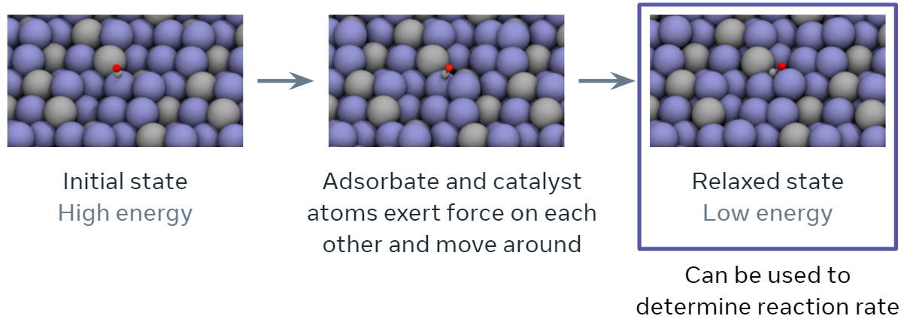
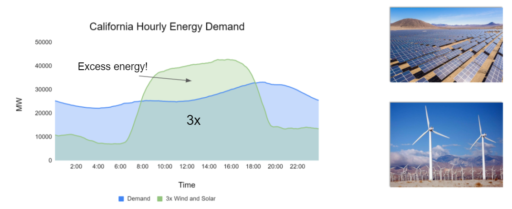

Background #
The discovery of efficient and economic catalysts (materials) are needed to enable the widespread use of renewable energy technologies. A common approach in discovering high performance catalysts is using molecular simulations. Specifically, each simulation models the interaction of a catalyst surface with molecules that are commonly seen in electrochemical reactions. By predicting these interactions accurately, the catalyst’s impact on the overall rate of a chemical reaction may be estimated.
An important quantity in screening catalysts is their adsorption energy for the molecules, referred to as `adsorbates’, involved in the reaction of interest. The adsorption energy may be found by simulating the interaction of the adsorbate molecule on the surface of the catalyst to find their resting or relaxed energy, i.e., how tightly the adsorbate binds to the catalyst’s surface (visualized below). The rate of the chemical reaction, a value of high practical importance, is then commonly approximated using simple functions of the adsorption energy. The goal of this tutorial specifically and the project overall is to encourage research and benchmark progress towards training ML models to approximate this relaxation.
Specifically, during the course of a relaxation, given an initial set of atoms and their positions, the task is to iteratively estimate atomic forces and update atomic positions until a relaxed state is reached. The energy corresponding to the relaxed state is the structure’s ‘relaxed energy’.
As part of the Open Catalyst Project (OCP), we identify three key tasks ML models need to perform well on in order to effectively approximate DFT –
Given an Initial Structure, predict the Relaxed Energy of the relaxed strucutre (IS2RE),
Given an Initial Structure, predict the Relaxed Structure (IS2RS),
Given any Structure, predict the structure Energy and per-atom Forces (S2EF).

Climate Impact#

Scalable and cost-effective solutions to renewable energy storage are essential to addressing the world’s rising energy needs while reducing climate change. As illustrated in the figure below, as we increase our reliance on renewable energy sources such as wind and solar, which produce intermittent power, storage is needed to transfer power from times of peak generation to peak demand. This may require the storage of power for hours, days, or months. One solution that offers the potential of scaling to nation-sized grids is the conversion of renewable energy to other fuels, such as hydrogen. To be widely adopted, this process requires cost-effective solutions to running chemical reactions.
An open challenge is finding low-cost catalysts to drive these reactions at high rates. Through the use of quantum mechanical simulations (Density Functional Theory, DFT), new catalyst structures can be tested and evaluated. Unfortunately, the high computational cost of these simulations limits the number of structures that may be tested. The use of AI or machine learning may provide a method to efficiently approximate these calculations; reducing the time required from 24} hours to a second. This capability would transform the search for new catalysts from the present day practice of evaluating O(1,000) of handpicked candidates to the brute force search over millions or even billions of candidates.
As part of OCP, we publicly released the world’s largest quantum mechanical simulation dataset – OC20 – in the Fall of 2020 along with a suite of baselines and evaluation metrics. The creation of the dataset required over 70 million hours of compute. This dataset enables the exploration of techniques that will generalize across different catalyst materials and adsorbates. If successful, models trained on the dataset could enable the computational testing of millions of catalyst materials for a wide variety of chemical reactions. However, techniques that achieve the accuracies required** for practical impact are still beyond reach and remain an open area for research, thus encouraging research in this important area to help in meeting the world’s energy needs in the decades ahead.
Tip
The computational catalysis community often aims for an adsorption energy MAE of 0.1-0.2 eV for practical relevance.
Background & Prerequisites#
Basic experience training ML models. Familiarity with PyTorch. Familiarity with Pytorch-Geometric could be helpful for development, but not required. No background in chemistry is assumed.
For those looking to apply our pretrained models on their datasets, familiarity with the [Atomic Simulation Environment](https://wiki.fysik.dtu.dk/ase/#:~:text=The%20Atomic%20Simulation%20Environment%20(ASE,under%20the%20GNU%20LGPL%20license.) is useful.
Background References#
To gain an even better understanding of the Open Catalyst Project and the problems it seeks to address, we strongly recommend the following resources:
To learn more about electrocatalysis, see our white paper.
To learn about the OC20 dataset and the associated tasks, please see the OC20 dataset paper.